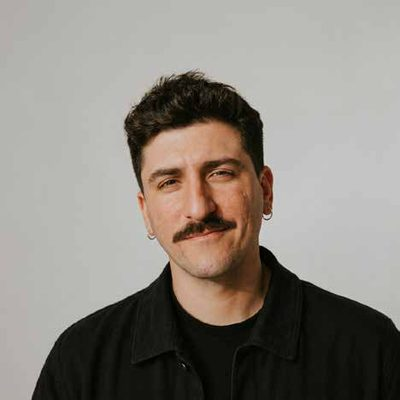

Anthony Peyronin
Identités visuelles, plateforme de marque et direction artistique. Je pense la marque de l’intérieur vers l’extérieur : le sens avant l’image.

expérience
Chargé de communication · Identité de marque & design graphiqueSynergis Environnement · CDI
Nouvelle identité de marque complète (logo, charte graphique, univers), stratégie de communication et positionnement, supports print & digitaux, refonte du site, réseaux sociaux, contenus visuels et vidéo.
Designer graphique multimédiaStudio lelatin · Freelance
Identités de marque en partant de la stratégie : plateforme de marque, logos, chartes, print (affiches, plaquettes), web (arborescence, wireframes, webdesign).
CoachLa Box Académie
Méthodologie de projet, design thinking, animation d’ateliers, suivi et feedback des étudiants.
Chargé de communication / Designer graphiqueENSAM
Extension de la charte, refonte du site et SEO, média Instagram dédié à l’actualité architecturale, affichage hebdomadaire, événements.
Chargé de communication / Designer graphiqueIFSE
Création de l’identité de marque, co-création du site, blog, supports social media.
Chef de projet communicationLa Box Académie · association les académiciens
Stratégie de communication, coordination de projets avec enseignants, formateurs et professionnels.
Formateur digital – social mediaFreelance
Ateliers de stratégie digitale et de community management, supports pédagogiques, conseil en contenus.
Designer graphique multimédiaJiminee · Lyon, à distance
Identité graphique, communication digitale, site WordPress, campagnes et e-learning.
Social media managerFreelance
Gestion des réseaux, calendrier éditorial, cadrage et montage, création graphique.
Designer graphique multimédiaLa Trattoria
Veille marketing, social media, création et réalisation d’événements.
éducation
- Mastère 2 · Manager des stratégies marketing et communication, Project ManagementLa Box Académie ·
- Mastère 2 · Manager de projets Web & DigitalLa Box Académie · Très bien + félicitations · Major de promo
- Mastère 2 · Les métiers de l’agence communicationLa Box Académie · Très bien + félicitations · Major de promo
- Bachelor · Concepteur réalisateur Web DigitalLa Box Académie · Mention
- Bachelor · Les métiers de l’agence communicationLa Box Académie · Mention
- BTS CommunicationIFC Groupe d’enseignement supérieur ·
- BTS Management en restauration, hôtellerie et cuisineESICAD ·
- Baccalauréat professionnel cuisineLycée des Métiers Alexandre Dumas · Mention
- CAP cuisineLycée Professionnel Ferdinand Revoul · Mention
Un projet ? Une marque à faire naître ?
Écris-moi, on s’occupe du reste.